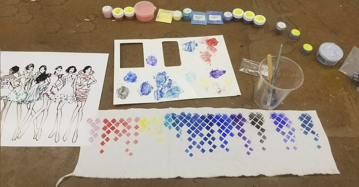
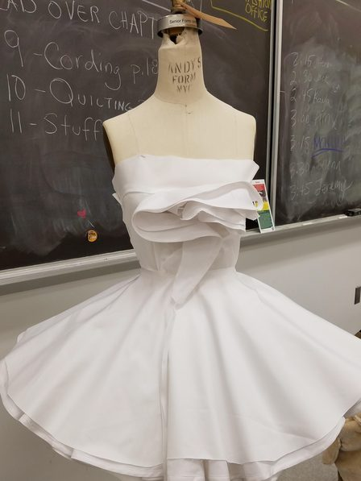
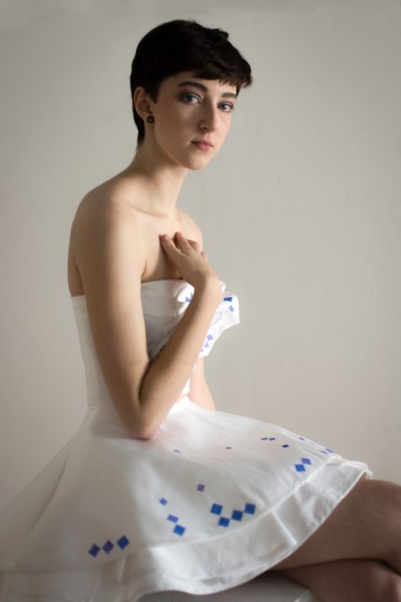

Thermochromic Collection
01Overview
"Disappearance" is a wearable technology project that seeks to communicate the urgent impact of global environmental changes through fashion. The dresses designed for this project change color in response to pollution data, symbolizing the planet's health in real-time and making the effects of climate change visible and immediate.
02Role & Responsibilities
- Role: Lead Designer and Engineer
- Responsibilities: This was my conceptual design from material selection to technology integration, and the final execution of the project. The aim was to ensure that every element of the design not only met aesthetic and functional goals but also effectively conveyed the environmental message at the core of the project.
03Inspiration
This project is inspired by the power of sensory technology to bridge the gap between abstract environmental data and everyday experience. By embedding this technology into fashion, "Disappearance" aims to make the generally unseen realities of climate change a tangible and personal issue.
04Materials & Technologies
- Cotton: Selected for its natural breathability and comfort, cotton also aligns with the sustainability goals of the project, underscoring the importance of responsible material choices.
- Thermoplastic Polyurethane (TPU) Film: Because of its flexibility and the bond with textiles, TPU was used; it served as foundation for the thermochromic pigments.
- Thermochromic Pigments: These pigments were mixed with a gel medium and applied to the TPU film, changing color as a reaction to temperature changes, creating a visual representation of environmental data through color shifts.
- Heating Elements: Off the shelf mesh polyester filament with embedded micro metal conductive fibers, encapsulated in polyimide film.

05Process & Development
- Material Research and Selection: I began with extensive research to identify materials that could integrate smoothly with the electronic components while remaining wearable and aesthetically appealing.
- Technology Integration: This phase involved carefully embedding the heating elements and configuring a microcontroller to ensure the thermochromic pigments responded accurately to temperature changes.
- Prototyping and Testing: Through multiple iterations, the garments were refined to achieve the desired balance of visual impact and user comfort, ensuring reliable performance during wear.

06Challenges
The most significant challenge was the initial vision of integrating real-time environmental data collection. While this wasn't fully realized, the alternative approach—using an Arduino Uno to simulate environmental changes—allowed the concept to be effectively demonstrated during the fashion show.
07Outcome & Impact
The project culminated in a successful showcase at a fashion event, where the dresses illustrated the fluctuating health of our planet. "Disappearance" not only highlighted the potential of smart textiles in fashion but also sparked important conversations about sustainability and environmental responsibility.

08Reflections & Learnings
"Disappearance" provided insights into the complexities of combining live data with wearable technologies. It underscored the importance of material compatibility and careful electronic configuration.